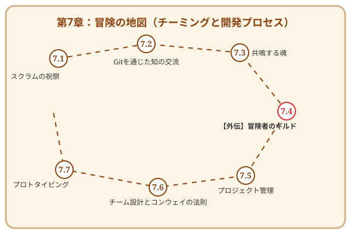

第7章 アジャイルという名の冒険パーティ——開発プロセス

この章で手に入れる力
ここまでの旅で、あなたは要求を聴き取り、設計し、実装し、テストで守り、磨き上げ、本番環境へ送り出す力を身につけました。一人の冒険者として、十分な実力を備えたと言えるでしょう。
しかし、現実のソフトウェア開発は、一人では完結しません。仲間と共に走り、互いの強みを活かし、チームとして価値を生み出す——そこに新たな喜びと、一人では到達できない高みがあります。
この章では、アジャイル開発の心臓部であるスクラムのリズム、Gitを使ったコードの知の交流、そしてペアプログラミングやモブプログラミングによるリアルタイムの「思考の同期」を学びます。冒険パーティを組み、オーケストラのように調和しながら、チームの力を最大限に引き出しましょう。
冒険の地図

読了後のあなた
この章を読み終えると、あなたは以下のことができるようになります。
- リズムを刻む: スプリントとセレモニーで、チーム開発にリズムと祝祭を生み出せる
- 交流する: プルリクエストとコードレビューで、互いの知恵をコードに込められる
- 共鳴する: ペアプログラミングで、一人では思いつかない発想をリアルタイムに引き出せる
- 調和する: チーム全体でモブプログラミングを実践し、知識の属人化を解消できる
一人の冒険者から、最強の冒険パーティへ。仲間と共に、新たなステージへ踏み出しましょう。
さらに学ぶためのリソース（章全体）
- 📚 ガイド: Ken Schwaber, Jeff Sutherland『スクラムガイド』（すべてのスクラム実践者の出発点。常に最新版を確認しましょう）
- 📚 書籍: Henrik Kniberg『塹壕より Scrum と XP』（現場での苦労と工夫が詰まった、世界中で読まれている実践記。InfoQで無料公開）
- 📚 書籍: Scott Chacon, Ben Straub『Pro Git 第2版』（Gitの仕組みから応用までを網羅した、公式サイト公開の決定版）
- 📚 書籍: Mark Pearl著、長尾高弘訳『モブプログラミング・ベストプラクティス』（モブプログラミングをチームに導入するための実践的ガイド）
- 🌐 Web: Woody Zuill "Mob Programming"（モブプログラミングの提唱者による情報サイト）
📜 賢者伝説（学術論文）
- 📄 80s: Hirotaka Takeuchi and Ikujiro Nonaka "The New New Product Development Game" (1986)（スクラムの名称と概念の源流となった、日本発の画期的な経営学論文）
- 📄 90s: Kent Beck "Embracing Change with Extreme Programming" (1999)（変化を恐れず受け入れるアジャイル開発の精神を具現化した、XP（エクストリーム・プログラミング）の宣言書）